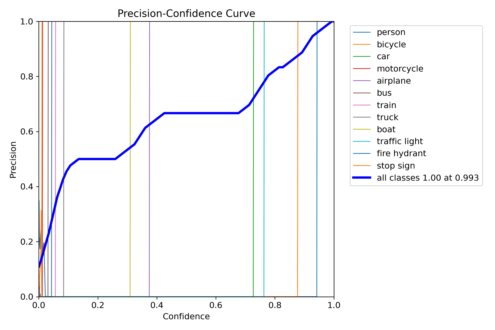
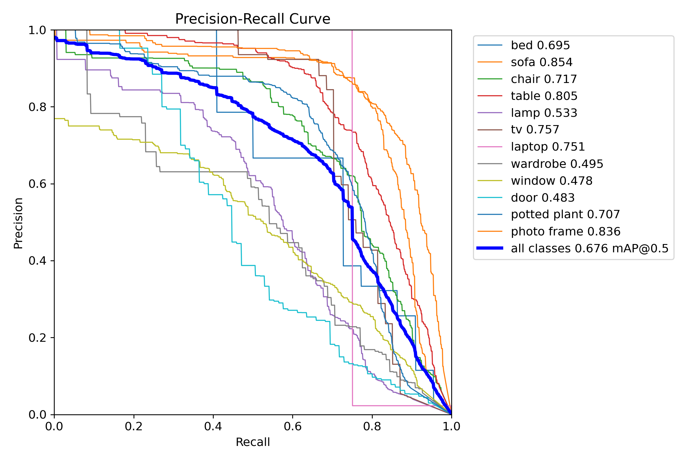
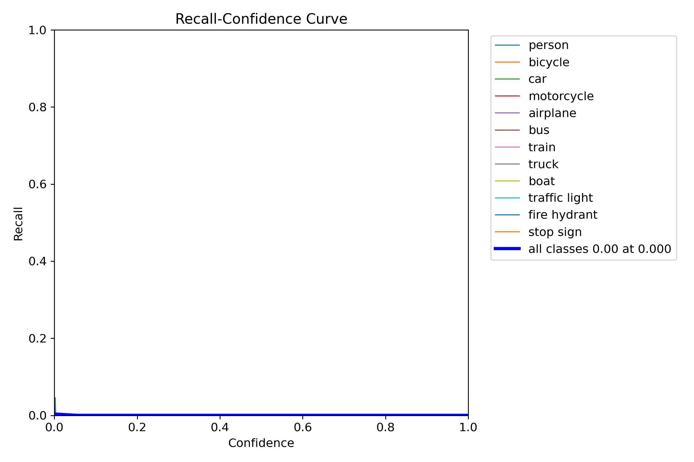
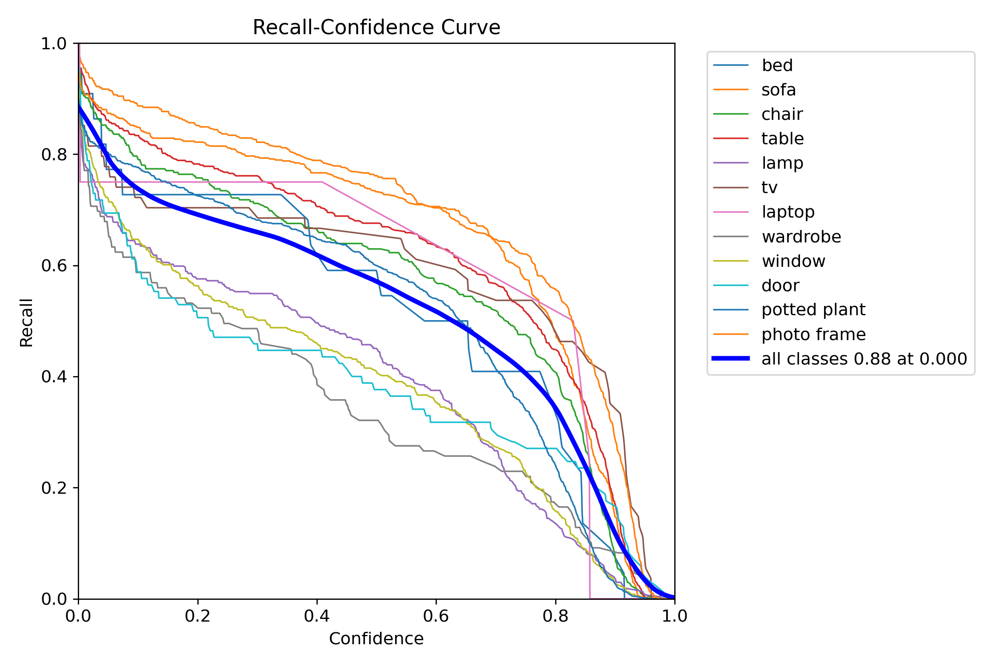
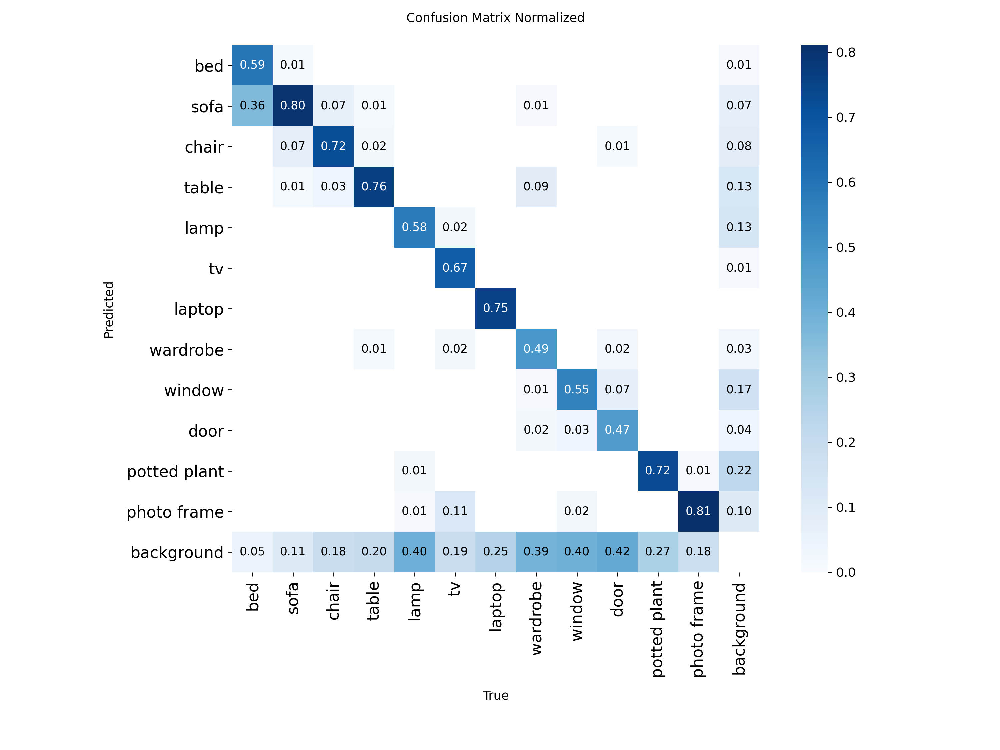

Revath Sankar
Masters candidate in Biomedical Engineering - Interested in applications of computer vision in biomedical AI.
LinkedInColumbia University
EECS E4764 Fall'25
Artificial Intelligence of Things
Team 20 Project Report
Group 20 - Adib Khondoker, Dexin Huang, Revath Sankar
Remember to use combination of descriptions, photos, and figures
The system follows an edge-to-cloud architecture designed to support real-time assistive object detection. A Raspberry Pi equipped with a camera serves as the edge device, capturing image frames from the environment. These frames are periodically transmitted via HTTPS POST requests to a YOLOv8 inference service deployed on Google Cloud Run. The cloud service performs object detection and returns structured JSON responses containing class labels, confidence scores, and bounding box coordinates. The Raspberry Pi then uses this information to render detections on a local graphical interface, providing situational awareness to the user. While the architecture includes a flight control subsystem to illustrate a potential mobile deployment, autonomous navigation is presented as a planned extension rather than a fully implemented feature in the current prototype.
The "YOLO" (You Only Look Once) algorithm is a prominent real-time object detection algorithm that uses a single convolutional neural network to predict bounding boxes and classify objects simultaneously. YOLO is unique in that it treats object detection as a single regression task, predicting bouding boxes and class probabilities directly from full images in one evaluation. This has made YOLO significantly faster than previous two-way detectors.

The YOLO model is comprised of a three-part architectured that follows a "Backbone, Neck, Head" pattern. In this architecture, the backbone serves to extract core features from the input image, the neck takes in multi-scale features from the backbone and fuses or aggregates them to create a richer feature set; often using the Feature Pyramid Network and Path Aggression Network techniques, finally, the head consumes the refined feature information from the neck to make final predictions, generate bounding box coordinates; object confidence scores and class labels. The model selects the best optimizer; in this case the ADAM Optimization algorithm. Additionally, the YOLO version 8, which we are utilizing for the purposes of this experiment leverages a modified CSP Darknet architecture - with several C2F modules to reduce computational redundancy, improve gradient flow and feature reuse; the model is also anchor-free, allowing the model to directly predict bounding box properties, eliminating the need for pre-defined anchor boxes and the typical clustering process.
| Parameter | Value |
|---|---|
| Training Epochs | 100 |
| Image Size | 640 px |
| Training Size | 80% |
| Cosine Learning Rate | True |
| Workers | 100 | Learning Rate | 1e-2 |
The HomeObjects-3K dataset is a curated collection of indoor household object images designed specifically for training, validating, and benchmarking object detection models like YOLO. It was released by the Ultralytics team (the maintainers of YOLO) and is included as a sample dataset in the Ultralytics documentation and tools.[2] We chose this dataset because of our focus in assisted living environments and low-light indoor environments and identification of common household objects in those environments.
| Total Images | Training Set Size | Validation Set Size |
|---|---|---|
| ~3,000 | 2,285 | 404 |
| True Label | Predictions |
|---|---|
 |
 |
YOLO model deployed on Google Cloud Run. Accepts JPEG via HTTPS POST. Returns JSON with detections, confidence, and bounding boxes. Latency is 150ms per inference.
Base URL: https://uav-rescue-detection-xhp2lso5pq-uc.a.run.app
| Endpoint | Method | Description |
|---|---|---|
/health |
GET | Health check |
/classes |
GET | List detectable classes |
/detect |
POST | Run YOLO inference |
{
"status": "success",
"person_detected": true,
"num_detections": 2,
"detections": [
{
"class": "Person",
"confidence": 0.9878,
"bbox": [120.5, 45.2, 380.1, 520.8]
}
],
"latency_ms": 145.32
}
ESP32-CAM --> HTTPS POST --> Cloud Run (YOLOv8) --> JSON Response
| | |
Capture Inference person_detected
Image ~150ms true/false
CAM captures images and sends to Cloud Run API. API returns detection results for display or alerts.
For our Prototype Autonomous Drone system, the components consisted of a Raspberry PI + Cam for primary flight control and image capture, 4 Lidar Sensors, a BNO055 IMU, and a PWM breakout board on a 3rd party drone kit package The goal was to utilize lidar sensors covering the drones sides to keep it from hitting into obstacles, an Adafruit BNO055 IMU to keep track of its position and how far it has traveled and feed it into a PID algorithm to keep the drones flight characteristics stable. Then the onboard camera would capture images
Autonomous mobility was explored as part of the system design; however, full autonomous flight was not completed within the project timeframe. During testing, a hardware failure resulted in a crash that prevented further validation of the autonomous control loop. As a result, the implemented prototype focuses on the vision-based detection, cloud inference, and visualization pipeline, while the flight-control subsystem is presented as planned future work.
The Adafruit BNO055 serves as the inertial sensing component of the system, providing real-time orientation and motion data. It is a 9-DOF absolute orientation sensor that integrates an accelerometer, gyroscope, and magnetometer and communicates with the raspberry pi over UART.
Within the system architecture, the BNO055 is intended to supply attitude and orientation feedback to the flight-control subsystem. In a fully autonomous configuration, this data would be combined with vision-based detections and other sensor inputs and fed into a PID control loop to stabilize motion and guide navigation.
To use this sensor with the Raspberry PI, the following library must be installed using:
sudo pip3 install adafruit-circuitpython-bno055

The VL53L0X LiDAR sensor is used for short-range distance measurements with a typical sensing range of up to approximately 2 meters according to its specifications. In the proposed system, multiple VL53L0X sensors would be mounted on the sides of the drone to monitor proximity to surrounding surfaces such as walls and furniture to allow the system to detect obstacles before physical contact occurs, enabling the drone to slow down or adjust its trajectory to avoid collisions during operation.
To use these sensors with the Raspberry pi, you must install these libraries and enable 12c communication through:
sudo pip3 install adafruit-circuitpython-vl53l0x
sudo apt-get install python3-smbus
Enable I2C Interface:
sudo raspi-config
# Navigate to: Interface Options → I2C → Enable
Because multiple VL53L0X LiDAR sensors share the same default I²C address, an address management procedure is required to operate multiple sensors on a single I²C bus. Each sensor exposes an XSHUT (shutdown) pin, which allows the device to be individually enabled or disabled. On system boot, all sensors are initially held in shutdown. Sensors are then enabled one at a time, and upon activation, each sensor’s I²C address is reassigned in software before enabling the next sensor. This process ensures that all sensors operate concurrently on the same bus without address conflicts. The address assignment and sensor initialization are implemented programmatically using Python on the Raspberry Pi.
The Adafruit 16-Channel PWM/Servo HAT (PCA9685) is used to generate stable, hardware-timed PWM signals needed for motor and actuator control.
The Raspberry Pi has limited native hardware PWM outputs, and software-driven PWM can introduce timing jitter when the CPU is busy
(capturing frames, networking, or running application logic).
The PWM generation offloaded to a dedicated controller over I2C.
In our system design, this board would regulate motor thrust and enable consistent control
behavior required for closed-loop stabilization. Although full autonomous flight was not completed within the project timeframe, the PWM HAT
defines the intended motor-control layer for scalable, reliable actuation.
You need to install the following libraries
sudo pip3 install adafruit-circuitpython-pca9685
sudo pip3 install adafruit-circuitpython-servokit
To support autonomous mobility, we designed a closed-loop PID control structure that would continuously correct the drone’s motion using sensor feedback. At a high level, the controller compares a desired setpoint (e.g., target altitude, heading, or position) against the measured state from onboard sensors, computes an error signal, and outputs motor commands that reduce this error over time. The standard PID control law is:
$$e(t) = x_d(t) - x(t)$$ $$u(t) = K_p e(t) + K_i\int_0^t e(\tau)\,d\tau + K_d\frac{de(t)}{dt}$$
In our implementation plan, the proportional term would provide immediate corrective action proportional to the current error, the integral term would compensate for persistent bias (e.g., gravity, imbalance, steady disturbances), and the derivative term would damp rapid changes to reduce overshoot and oscillation. Because quadrotor dynamics are coupled and underactuated, the intended design uses a cascaded approach rather than a single PID loop for all states.
In practice, this structure would run at a fixed control frequency with measured timestep dt, include actuator saturation limits, and implement anti-windup handling for the integral term to prevent instability when motor commands hit their maximum or minimum values. While full autonomous flight was not completed within the project timeframe due to hardware failure during testing, the above control design reflects the intended approach we aimed to implement and tune on our platform.
During flight, the onboard software is structured as a dual-loop system to ensure that time-critical motor control is never blocked by network operations. A high-frequency control loop continuously reads orientation data from the BNO055 inertial measurement unit (IMU) over the I2C bus to estimate the current attitude of the platform (roll, pitch, and yaw). This loop computes stabilization corrections using a PID controller and sends updated motor commands to the PCA9685 PWM HAT, which generates PWM signals for each electronic speed controller (ESC).
In parallel, a lower-frequency perception loop periodically captures a JPEG image from the Raspberry Pi camera and transmits it to a Google Cloud Run endpoint via an HTTPS POST request. The server performs YOLO-based object detection and returns a JSON response containing detection results such as class labels, confidence scores, and bounding box coordinates. These results are stored in shared state and can be accessed by higher-level mission logic.
Based on the returned perception data, the mission logic can optionally modify behavior, such as pausing translational motion and maintaining a stable hover when a person is detected. For demonstration purposes, the overall mission profile is implemented as a predetermined, time-based sequence (e.g., takeoff and hover, small yaw sweeps, and forward motion segments), while the perception pipeline runs concurrently in the background and logs detections in real time.
Fine-tuning YOLOv8n on home-relevant classes achieved 85.4% mAP with significant noise reduction. By focusing on only 12 classes of common household objects instead of 80, the model eliminates false positives like surfboards and laptops that distract from assistive operations.[3]
$$Precision = \frac{TP}{TP + FP}$$
$$Recall = \frac{TP}{TP + FN}$$
$$F1 = 2\times\frac{precision \times recall}{precision + recall}$$
Below are the plots generated from the validation phase with a randomly sampled 20% of the initial dataset. The F1 Confidence Curve plots the F1 score against different confidence thresholds. A higher F1 score indicates better performance, and the confidence threshold at which the F1 score is maximized is often considered the optimal threshold for making predictions; in the pre-trained model, 0.345 for all classes, and in the case of the base model, we cannot identify such a point across any class. As seen in Fig.2, the F1 Confidence curve under the pre-trained model demonstrates a higher peak when managing the HomeObjects-3K dataset, compared to the base model @ (0.345, 0.67) for the totality of classes. We can next evaluate the Precision-Recall Curve, which is a plot that shows the trade-off between precision and recall for different threshold values. The area under the curve (AUC) is a measure of how well the model is able to distinguish between classes; and as expected the pretrained model not only exhibits a higher AUC (0.676), but also has does not exhibit a near-zero area unlike the base model (0.019); this essentially confirms that the initial training is insufficient for our task of identification and detection. The Precision-Confidence & Recall-Confidence Curve plots precision and recall respectively against different confidence thresholds. For both of these cases, we can see that the Non-Pretrained model significantly underpreformed, not exhibitng the typical or ideal behavior in either case (Recall-Confidence with trendline decreasing from top-left to bottom-right traversing along x-axis; Precision-Confidence having a trendline that exhibits an increasing precision along the x-axis with high confidence across all precisions). Similarly within the Precision-Confidence curve, many of the classes reach the ideal "1.0" threshold only after traversing several confidence levels. Displaying an opposite but parallel behavior is the Recall-Confidence curve, where the pre-trained model exhibits a smooth downward curve, the base model essentially stays flat near-zero across all relevant classes.
On review of the summary statistics, we can see that for each of the twelve classes the measured precision (P), recall (R), mean average precision (mAP50) commonly used to evaluate the quality of object detectors, and Mean Average Precision averaged over IoU thresholds from 50% to 95% ( a stricter object detection evaluation metric), the pretrained model consistently outperforms the base model in bounding and detection tasks. The precision and recall of the object classifications and bounding box measurements are orders of magnitude higher in the pre-trained model as compared to the base model. This is further exemplified through the Confusion matrices where the non-pretrained model not only commonly misidentifies common household objects, but also misidentifies objects as background content.
| Base Model Summary Statistics | 
|
| Pre-Trained Model Summary Statistics | 
|
| Training Statistic | Value |
|---|---|
| Box Loss | 0.8619 |
| Classification Loss | 0.5749 |
| Focal Loss (DFL) | 1.004 |
| Metric | Non-Pretrained Model Plot | Pretrained Model Plot |
|---|---|---|
| F1-Confidence Curve |  |
|
| Precision-Confidence Curve |  |  |
| Precision-Recall Curve |  |
 |
| Recall-Confidence Curve |  |  |
| Confusion Matrix |  |
 |
Boesch, Gaudenz. “Explore Yolov8: Latest in Object Detection Tech.” Viso.Ai, viso.ai, 4 Apr. 2025, viso.ai/deep-learning/yolov8-guide/.
Ultralytics. “HomeObjects-3K Dataset.” Ultralytics YOLO Docs, 16 Nov. 2025, docs.ultralytics.com/datasets/detect/homeobjects-3k/.
Ultralytics. “Explore Ultralytics Yolov8.” Ultralytics YOLO Docs, 28 Oct. 2025, docs.ultralytics.com/models/yolov8/.
Basri, Ariffanan . “Trajectory Tracking of a Quadcopter UAV using PID Controller
Masters candidate in Biomedical Engineering - Interested in applications of computer vision in biomedical AI.
LinkedInMasters Candidate in Computer Engineering - Interested in Embedded Systems and FPGA Design
aak2250@columbia.edu

dh3172@columbia.edu
Revath Sankar: rs4485@columbia.edu
Dexin Huang: dh3172@columbia.edu
Adib Khondoker: aak2250@columbia.edu
Columbia University Department of Electrical Engineering
Instructor: Professsor Xiaofan (Fred) Jiang